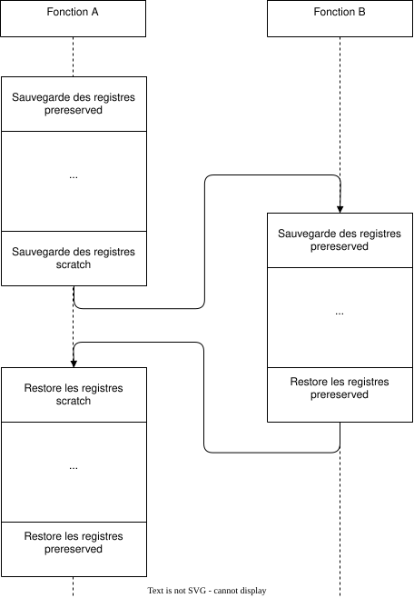

Fonctions¤

Margaret Hamilton la directrice du projet Apollo Guidance Computer (AGC) à côté du code du projet.
À l'époque d'Apollo 11, les fonctions n'existaient pas, le code n'était qu'une suite monolithique d'instruction ésotérique dont les sources du Apollo Guidance Computer ont été publiées sur GitHub. Le langage est l'assembler yaYUL dispose de sous-routines, ou procédures qui sont des fonctions sans paramètres. Ce type de langage est procédural.
Néanmoins, dans ce langage assembleur étrange, le code reste monolithique et toutes les variables sont globales.
Un programme convenablement structuré est découpé en éléments fonctionnels qui disposent pour chacun d'entrées et de sorties. De la même manière qu'un télencéphale hautement développé et son pouce préhenseur aime organiser sa maison en pièces dédiées à des occupations particulières et que chaque pièce dispose de rangements assignés les uns à des assiettes, les autres à des couverts, le développeur organisera son code en blocs fonctionnels et cherchera à minimiser les effets de bord.

Une fonction est donc un ensemble de code exécutable délimité du programme principal et disposant :
- D'un identifiant unique
- D'une valeur de retour
- De paramètres d'appel
L'utilisation des fonctions permet :
- De décomposer un programme complexe en tâches plus simples
- De réduire la redondance de code
- De maximiser la réutilisation du code
- De s'abstraire des détails d'implémentation
- D'augmenter la lisibilité du code
- D'accroître la traçabilité à l'exécution
En revanche, une fonction apporte quelques désavantages qui à l'échelle des ordinateurs moderne sont parfaitement négligeables. L'appel à une fonction ou sous-routine requiert du housekeeping, qui se compose d'un prélude et d'un aboutissant et dans lequel le contexte doit être sauvegardé.
Conventions d'appel¤
Dans le Voyage de Chihiro (千と千尋の神隠し) de Hayao Miyazaki, le vieux Kamaji (釜爺) travaille dans la chaudière des bains pour l'alimenter en charbon et préparer les décoctions d'herbes pour parfumer les bains des clients.

Je vous propose de bâtir une métaphore du changement de contexte en s'inspirant de cette illustration. Les murs de la chaudière sont emplis de casiers contenant différentes herbes, ces casiers peuvent être apparentés à la mémoire de l'ordinateur, et les différentes herbes, des types de données différents. De son pupitre Kamaji dispose de plusieurs mortiers dans lequel il mélange les herbes ; ils sont à l'instar de l'ALU d'un ordinateur le siège d'opérations transformant, à l'aide du pilon, plusieurs entrées en une seule sortie : le mélange d'herbes servant à la décoction. Bien qu'il ait six bras et afin de s'éviter des manipulations inutiles, il garde de petites réserves d'herbes à côté de son pupitre dans de petits casiers, similaires aux registres du processeur.
Il profite de son temps libre, pendant que les bains sont fermés pour préparer certains mélanges d'herbes les plus populaires et il place ce stock dans un casier du mur. Préparer un mélange est très similaire à un programme informatique dans lequel une suite d'opération représente une recette donnée. Le vieux Kamaji à une très grande mémoire, et il ne dispose pas de livre de recettes, mais vous, moi, n'importe qui, aurions besoin d'instructions claires du type :
AUTUMN_TONIC_TEA :
MOVE R1 @B4 # Déplace de la grande ortie du casier B4 au registre R1
MOVE R2 @A8 # Déplace la menthe verte (Mentha spicata) du casier
# A8 au registre R2
MOVE R3 @C7 # Déplace le gingembre du casier C7 au registre R3
...
CHOP R4 R3, FINE # Coupe très finement le gingembre et le place dans R4
...
LEAV R2 R5 # Détache les feuilles des tiges de la menthe
# verte, place les feuilles en R5
...
ADD R8 R1 R5 # Pilonne le contenu de R1 et R2 et place dans R8
ADD R8 R8 R4
...
STO R8 @F6 # Place le mélange d'herbe automnale tonic dans le casier F6
Souvent, le vieux Kamaji répète les mêmes suites d'opération et ce, peu importe les herbes qu'il manipule, une fois placées dans les petits casiers (registres), il pourrait travailler les yeux fermés.
On pourrait résumer ce travail par une fonction C, ici prenant un rhizome et deux herbes en entrée et générant un mélange en sortie.
Pour des recettes complexes, il se pourrait que la fonction slice_and_blend soit appelée plusieurs fois à la suite, mais avec des ingrédients différents. De même que cette fonction fait appel à une autre fonction plus simple tel que slice (découper) ou blend_together (incorporer).
Et le contexte dans tout cela ? Il existe selon le langage de programmation et l'architecture processeur ce que l'on appelle les conventions d'appel. C'est-à-dire les règles qui régissent les interactions entre les appels de fonctions. Dans notre exemple, on adoptera peut-être la convention que n'importe quelle fonction trouvera ses ingrédients d'entrées dans les casiers R1, R2 et R3 et que le résultat de la fonction, ici le blend, sera placé dans le casier R8. Ainsi peu importe les herbes en entrée, le vieux Kamaji peut travailler les yeux fermés, piochant simplement dans R1, R2 et R3.
On observe néanmoins dans la recette évoquée plus haut qu'il utilise d'autres casiers, R4, et R5. Il faut donc faire très attention à ce qu'une autre fonction peut-être la fonction slice, n'utilise pas dans sa propre recette le casier R5, car sinon, c'est la catastrophe.
Kamaji entrepose temporairement les feuilles de menthe verte dans R5 et lorsqu'il en a besoin, plus tard, après avoir découpé les fleurs de molène que R5 contient des tiges d'une autre plante.
Dans les conventions d'appel, il faut donc également donner la responsabilité à quelqu'un de ne pas utiliser certains casiers, ou alors d'en sauvegarder ou de restaurer le contenu au début et à la fin de la recette. Dans les conventions d'appel, il y a en réalité plusieurs catégories de registres :
- ceux utilisés pour les paramètres de la fonction,
- ceux utilisés pour les valeurs de retour,
- ceux qui peuvent être utilisés librement par une fonction (la sauvegarde est à la charge du caller, la fonction qui appelle une autre fonction),
- ceux qui doivent être sauvegardés par le callee (la fonction qui est appelée).
En C, ce mécanisme est parfaitement automatique, le programmeur n'a pas à se soucier du processeur, du nom des registres, de la correspondance entre le nom des herbes et le casier ou elles sont entreposées. Néanmoins, l'électronicien développeur, proche du matériel, doit parfois bien comprendre ces mécanismes et ce qu'ils coûtent (en temps et en place mémoire) à l'exécution d'un programme.
Overhead¤
L'appel de fonction coûte à l'exécution, car avant chaque fonction, le compilateur ajoute automatiquement des instructions de sauvegarde et de restauration des registres utilisés :


Ce coût est faible, très faible, un ordinateur fonctionnant à 3 GHz et une fonction complexe utilisant tous les registres disponibles, mettons 10 registres, consommera entre l'appel de la fonction et son retour 0.000'000'003 seconde, ça va, c'est raisonnable. Sauf que, si la fonction ne comporte qu'une seule opération comme ci-dessous, l'overhead sera aussi plus faible.
Stack¤
En français la pile d'exécution, est un emplacement mémoire utilisé pour sauvegarder les registres du processeur entre les appels de fonctions, sauvegarder les adresses de retour des fonctions qui sont analogue à sauvegarder le numéro de page du livre de recettes : p 443. Recette du Bras de Vénus : commencer par réaliser une génoise de 300g (p. 225). Une fois la génoise terminée, il faut se rappeler de retourner à la page 443. Enfin le stack est utilisé pour mémoriser les paramètres des fonctions supplémentaires qui ne tiendraient pas dans les registres d'entrées. La convention d'appel de la plupart des architectures prévoit généralement 3 registres pour les paramètres d'entrées, si bien qu'une fonction à 4 paramètres pourrait bien aussi utiliser le stack :
La pile d'exécution est, comme son nom l'indique, une pile sur laquelle sont empilés et dépilés les éléments au besoin. À chaque appel d'une fonction, la valeur des registres à sauvegarder est empilée et au retour d'une fonction les registres sont dépilés si bien que la fonction d'appel retrouve le stack dans le même état qu'il était avant l'appel d'une fonction enfant.
Prototype¤
Le prototype d'une fonction est son interface avec le monde extérieur. Il déclare la fonction, son type de retour et ses paramètres d'appel. Le prototype est souvent utilisé dans un fichier d'en-tête pour construire des bibliothèques logicielles. La fonction printf que nous ne cessons pas d'utiliser voit son prototype résider dans le fichier <stdio.h> et il est déclaré sous la forme :
Notons qu'il n'y a pas d'accolades ici.
Rappelons-le, C est un langage impératif et déclaratif, c'est-à-dire que les instructions sont séquentielles et que les déclarations du code sont interprétées dans l'ordre ou elles apparaissent. Ainsi, si je veux appeler la fonction make_coffee, il faut qu'elle ait été déclarée avant, c'est-à-dire plus haut.
Le code suivant fonctionne :
Mais celui-ci ne fonctionnera pas, car make_coffee n'est pas connu au moment de l'appel :
Si pour une raison connue seule du développeur on souhaite déclarer la fonction après main, on peut ajouter le prototype de la fonction avant cette dernière. C'est ce que l'on appelle la déclaration avancée ou forward declaration.
int make_coffee(void);
int main(void) {
make_coffee();
}
int make_coffee(void) {
printf("Please wait...\n");
}
Un prototype de fonction diffère de son implémentation par le fait qu'il ne dispose pas du code, mais simplement sa définition, permettant au compilateur d'établir les conventions d'appel de la fonction.
Syntaxe¤
La syntaxe d'écriture d'une fonction peut être assez compliquée et la source de vérité est issue de la grammaire du langage, qui n'est pas nécessairement accessible au profane. Or, depuis C99, une fonction prend la forme :
<storage-class>-
Classe de stockage, elle n'est pas utile à ce stade du cours, nous aborderons plus tard les mots clés
extern,staticetinline. <return-type>-
Le type de retour de la fonction, s'agit-il d'un
int, d'unfloat? Le type de retour est anonyme, il n'a pas de nom et ce n'est pas nécessaire. <function-name>-
Il s'agit d'un identificateur qui représente le nom de la fonction. Généralement on préfère choisir un verbe, quelquefois associé à un nom :
compute_norm,make_coffee, ... Néanmoins, lorsqu'il n'y a pas d'ambigüité, on peut choisir des termes plus simples tels quemain,displayoudot_product. <parameter-type> <parameter-name>-
La fonction peut prendre en paramètre zéro à plusieurs paramètres où chaque paramètre est défini par son type et son nom tel que :
double real, double imagpour une fonction qui prendrait en paramètre un nombre complexe.
Après la fermeture de la parenthèse de la liste des paramètres, deux possibilités :
- Prototype
-
On clos la déclaration avec un
; - Implémentation
-
On poursuit avec l'implémentation du code
{ ... }
void¤
Le type void est à une signification particulière dans la syntaxe d'une fonction. Il peut être utilisé de trois manières différentes :
-
Pour indiquer l'absence de valeur de retour :
-
Pour indiquer l'absence de paramètres :
-
Pour indiquer que la valeur de retour n'est pas utilisée par le parent :
La déclaration suivante est formellement fausse, car la fonction ne possède pas un prototype complet. En effet, le nombre de paramètres n'est pas contraint et le code suivant est valide au sens de C99.
Aussi, il est impératif de toujours écrire des prototypes complets et d'explicitement utiliser void lorsque la fonction ne prend aucun paramètre en entrée. Si vous utilisez un compilateur C++, une déclaration incomplète génèrera une erreur.
Paramètres¤
Comme nous l'avons vu plus haut, pour de meilleures performances à l'exécution, il est préférable de s'en tenir à un maximum de trois paramètres, c'est également plus lisible pour le développeur, mais rien n'empêche d'en avoir plus.
En plus de cela, les paramètres peuvent être passés de deux manières :
- Par valeur
- Par référence
En C, fondamentalement, tous les paramètres sont passés par valeur, c'est-à-dire que la valeur d'une variable est copiée à l'appel de la fonction. Dans l'exemple suivant, la valeur affichée sera bel et bien 33 et non. 42
Dans certains cas, on souhaite utiliser plus d'une valeur de retour et l'on peut utiliser un tableau. Dans l'exemple suivant, la valeur affichée sera cette fois-ci 42 et non 33.
void alter(int array[]) {
array[0] += 9;
}
void main(void) {
int array[] = {33, 34, 35};
alter(array);
printf("%d\n", array[0]);
}
Par abus de langage et en comparaison avec d'autres langages de programmation, on appellera ceci un passage par référence, car ce n'est pas une copie du tableau qui est passée à la fonction alter, mais seulement une référence sur ce tableau.
En des termes plus corrects, mais nous verrons cela au chapitre sur les pointeurs, c'est bien un passage par valeur dans lequel la valeur d'un pointeur sur un tableau est passée à la fonction alter.
Retenez simplement que lors d'un passage par référence, on cherche à rendre la valeur passée en paramètre modifiable par le caller.
Exemples de fonctions¤
Suite de Fibonacci¤
La suite de Fibonacci est une suite d'entiers dans laquelle chaque terme est la somme des deux termes précédents. La suite commence par 0 et 1. La suite commence donc par 0, 1, 1, 2, 3, 5, 8, 13, 21, 34, ...
Voici une implémentation de la suite de Fibonacci en utilisant une approche itérative :
int fib(int n)
{
int sum = 0;
int t1 = 0, t2 = 1;
int next_term;
for (int i = 1; i <= n; i++)
{
sum += t1;
next_term = t1 + t2;
t1 = t2;
t2 = next_term;
}
return sum;
}
Syntaxe traditionnelle¤
Historiquement, la syntaxe des fonctions en C était différente de celle que nous avons vue jusqu'à présent. Considérons la fonction suivante :
En C89, la syntaxe de cette fonction était la suivante :
Cette syntaxe est toujours valide dans les versions plus récentes du langage, mais elle est déconseillée car elle est moins lisible que la syntaxe moderne.
Exercices de révision¤
Exercice 88 : Dans la moyenne
Écrire une fonction mean qui reçoit 3 paramètres réels et qui retourne la moyenne.
Exercice 89 : Le plus petit
Écrire une fonction min qui reçoit 3 paramètres réels et qui retourne la plus petite valeur.
Exercice 90 : Algorithme de retour de monnaie
On considère le cas d'une caisse automatique de parking. Cette caisse délivre des tickets au prix unique de CHF 0.50 et dispose d'un certain nombre de pièces de 10 et 20 centimes pour le rendu de monnaie.
Dans le code du programme, les trois variables suivantes seront utilisées :
// Available coins in the parking ticket machine
unsigned int ncoin_10, ncoin_20;
// How much money the user inserted into the machine (in cents)
unsigned int amount_payed;
Écrivez l'algorithme de rendu de la monnaie tenant compte du nombre de pièces de 10 et 20 centimes restants dans l'appareil. Voici un exemple du fonctionnement du programme :
Le programme reçoit sur stdin les pièces introduites dans la machine. Les deux arguments passés au programme ptm sont 1. le nombre de pièces de 10 centimes disponibles et 2. le nombre de pièces de 20 centimes disponibles. stdout contient les valeurs rendues à l'utilisateur. La valeur ticket correspond au ticket distribué.
Le cas échéant, s'il n'est possible de rendre la monnaie, aucun ticket n'est distribué et l'argent donné est rendu.
Solution
Voici une solution partielle :
#define TICKET_PRICE 50
void give_coin(unsigned int value) { printf("%d\n", value); }
void give_ticket(void) { printf("ticket\n"); }
bool no_ticket = amount_payed < TICKET_PRICE;
int amount_to_return = amount_payed - TICKET_PRICE;
do {
while (amount_to_return > 0) {
if (amount_to_return >= 20 && ncoin_20 > 0) {
give_coin(20);
amount_to_return -= 20;
ncoin_20--;
} else if (amount_to_return >= 10 && ncoin_10 > 0) {
give_coin(10);
amount_to_return -= 10;
ncoin_10--;
} else {
no_ticket = true;
break;
}
}
} while (amount_to_return > 0);
if (!no_ticket) {
give_ticket();
}
Exercice 91 : La fonction f
Considérons le programme suivant :
Quel sont les types et les valeurs retournées par les expressions ci-dessous ?
Quel est votre conclusion sur cette fonction ?
Exercice 92 : Mauvaise somme
Le programme suivant compile sans erreurs graves, mais ne fonctionne pas correctement.
#include <stdio.h>
#include <stdlib.h>
#include <math.h>
long get_integer()
{
bool ok;
long result;
do
{
printf("Enter a integer value: ");
fflush(stdin); // Empty input buffer
ok = (bool)scanf("%ld", &result);
if (!ok)
printf("Incorrect value.\n");
}
while (!ok);
return result;
}
int main(void)
{
long a = get_integer;
long b = get_integer;
printf("%d\n", a + b);
}
Quel est le problème ? À titre d'information voici ce que le programme donne, notez que l'invité de saisie n'est jamais apparu :